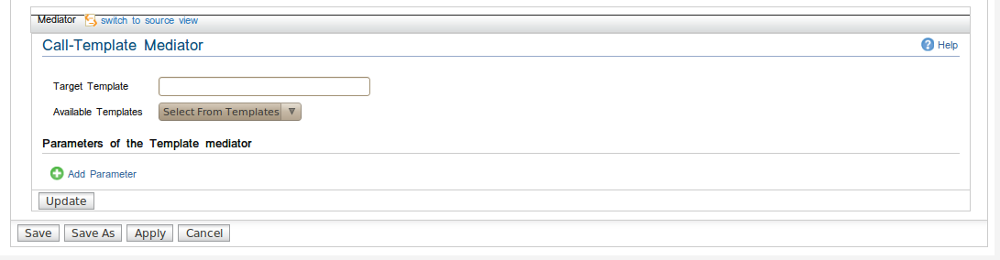

Call Template Mediator
The call template mediator is used to invoke a target Sequence Template. It will define/populate corresponding
parameters of a template before actually executing the template.

Call Template Mediator
-
Target Template : target sequence template this call template mediator refering to.
-
Available Templates : Lists all available sequence templates in ESB configuration/registry . When user
selects one of the available templates it will autonatically list down the relevant parameters of
the selected sequence template
Parameters of Call-Template mediator
Manage the parameters which would be referred from target Sequence Template.

Call-Template Mediator - Add Parameter
-
Parameter Name: Name of the parameter.
-
Parameter Type: Whether it is a static value or an xpath expression.
-
Value/ Expression: The static value or the xpath expression.
-
Dynamic Xpath: when this option is selected AND if type is an xpath expression , it will be rendered
as an double quoted expression ,meaning xpath will be evaluated dynamically. Hence xpath expression will
not be passed as an evaluated value to a sequence template ,rather it will be evaluated just before
the expression is used within the template
-
NSEditor: Specify the namespaces that are used in the xpath expression.
-
Action: Delete the paramater.